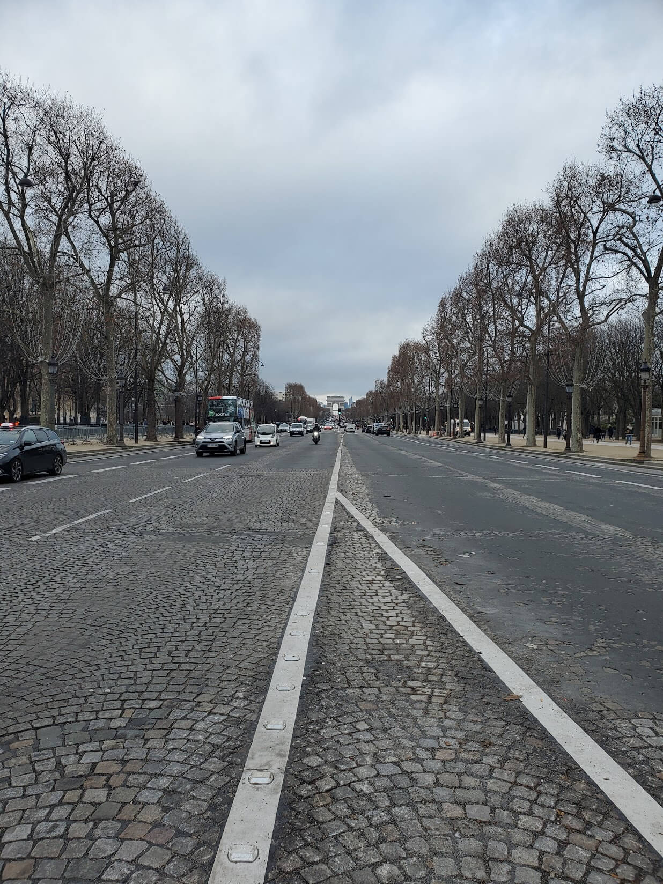

International Exchange Term in Sweden 🇸🇪

-
In my third year, I went on a 5 month exchange to the home of IKEA, the ancient Nordic country of Sweden. I attended Lund University, which is one of the oldest universities in Northern Europe. While I was there, I made sure to travel lots and meet tons of new international friends in order to broaden my perspective on the wide wide world. Here are some of my favourite pictures that I've taken throughout the term! Photography is another one of my hobbies which I like to showcase, so if you'd like to see more, click here!
 -
Courses Taken Abroad
- SUSA11 Swedish: Introductory Course for Exchange Students 1
Of course I had to get a little Swedish in me while living in Sweden. This course was very friendly to international students, as it covered the basics of both the culture and the language. Everyone in the class were exchange students and had 0 previous knowledge so I would say I fit in quite well.
- FRTF05 Automatic Control, Basic Course
This course introduced many control concepts to me and provided knowledge for basic principles within control technology. Lots of fun labs as well.
- MVKF15 Introduction to Vehicle Systems
We were taught all of the main components in a modern day road vehicle, including the benefits, safety risks, and environmental issues. There are actually many popular car manufacturers in Sweden like Volvo and Saab so it seemed relevant.
- SASH83 Technology and Swedish Culture: Historical Perspectives
An elective that taught the development of Sweden and its industrial culture and society from 1800 to modern day.
- MMKF45 Rapid Prototyping
Basically just forming small groups and creating a fun prototype from scratch using the many provided resources. Everyone has to follow a concept or idea for the prototype, which changes every term, and for us it was an "interactive box". Click here to see the prototype we made and how we made it!
- MMKN65 Project - Machine Design
Present our findings for a topic of our choosing, similar to a type of research project. My chosen topic was the development and future of electric road systems. Research was done independently throughout the term.
- SUSA11 Swedish: Introductory Course for Exchange Students 1
-
Global Experience Certificate
Because of this international experience, I was inspired to pursue the Global Experience Certificate (GEC) as an additional diploma for after I gruaduate. The certificate allows others to recognize my international accomplishments abroad and provides me with a competitive international advantage.

Requirements:
- Two sequential language courses and one Global Studies course
- One international experience for a minimum of 6 consecutive weeks
- One intercultural volunteer experience for a minimum of 20 hours during one term
- Reflection piece about your international experience or intercultural volunteer experience
I took two Japanese courses, JAPAN 101 and JAPAN 102, for my language course requirements, and I used one of the electives I took while on exchange for my Global Studies course requirement.
I completed this requirement first, which was my international exchange term in Sweden.
For three school terms, I volunteered as a conversation partner as a part of the Conversation Partner Program offered through Renison International Office. Every volunteer is paired with an English language learner, some of who are new to the city.
I chose to do journal entries, which can be read below.
Journal Entries while Abroad
For the reflection piece requirement, I chose to write 6 journal entries while abroad, spread out throughout the term. Although it was mandatory for the certificate, the journal entries allowed me to reflect on my international experience while I was still experiencing it. This offered a more genuine look into how I was coping with this new adventure and managing any issues that arose.
Entry 1: August 22, 2022
It has been a week since I arrived in Lund, Sweden, and the past week has evoked an intense whirlwind of emotions. On the first day I arrived, I was carrying one large luggage and one small carry-on luggage as well as a backpack, and carrying it all around a new location while also trying to figure out where to go and how to get there was an overwhelming experience. Luckily, I arrived on Arrival Day, which means all the international and exchange students who were studying here were arriving on this day and there were many mentors and volunteers running around and helping us get sorted out. Since I arranged for housing externally, I needed to take public transit to get to the place, which I found extremely difficult and got lost several times. On top of that, the city roads were not luggage friendly. There was a surprising moment where I stood there and wondered why I decided this was a good idea and why I even came in the first place. The next day, I attended multiple orientation events and felt much better, but getting around was still difficult and settling into my new house elicited the same emotions and regret as the day before. These feelings kept re-emerging but after my first week here, I’ve learned to start settling in and find solace in other exchange students who are here and possibly experiencing the same thing.
Entry 2: September 16, 2022
I think I’m finally starting to feel a little more comfortable. There are still many orientation events that are going on and I’ve met lots and lots of new people. To my surprise, the city of Lund is actually full of international students from all over the world. I’ve also explored the city quite a bit and I’ve found out that it is very much centred around the university. An encounter I had this week was at a local pizza restaurant that I went to with a few new friends. So far, everyone has mostly spoken English with me but at this pizza place, the man running the shop started speaking Swedish to us and when we tried to indicate that we did not speak the language, he seemed to only speak faster. Using the little Swedish we have learned in our first few classes and also accompanied by lots of rapid pointing, we managed to successfully convey our orders to the shop owner. This interaction encouraged me to focus on my Swedish classes a little more while I was there, or at least enough to be able to order some food or ask for directions without needing to use as much pointing.
Entry 3: October 7, 2022
It has started to rain a lot more recently but luckily the weather is still fairly pleasant. Class was starting to get a little busy and we had our first few labs last week. I finally feel like I’m starting to really settle in and I had a specific moment where I thought this. Usually to get home from school, I would use Google maps and either ride an electric scooter or walk to the bus stop where I would then get on a 25 minute bus ride. In one instance last Thursday after my last class of the day, I was running a little late to catch the bus and so when I got onto the electric scooter, instead of taking the time to pull up Google maps on my phone, I just hopped on and went straight to the bus stop. I was so surprised that I knew my way around and I realized that I could start to recognize certain streets, buildings, and locations around the city.
Entry 4: November 11, 2022
Something different they do at this school is that they split their semesters into halves and call them periods. In each period, you can take different courses, so some courses only run in one period while some run in both periods. If the course only runs in one period, if there is an exam, it will take place at the end of the period, so last week was basically my first finals week in Sweden. In order to be able to do more traveling in the latter half of our exchange, I decided to take most of our difficult courses in the first period. As my friends and I were finishing up our exams and starting to unwind a little, I had a realization, which was that the student life in Lund was so amazing and different from back at Waterloo. So far, the two weeks following the end of the finals period has been crazy, with a bunch of events, parties, and gatherings to celebrate the end of this mini final exam period. Needless to say, all the built-up stress has been partied away.
Entry 5: December 13, 2022
Last week, I was able to travel outside of Scandinavia for the first time and I went on a weekend trip to Berlin, Germany with a few friends I met. One thing that I was thinking about the whole time I was there was how different the public transportation systems were in different cities and countries. In the past, I had never actively thought about it before traveling. In Berlin, the transportation works as an on and off trust system, so you buy some type of pass (we bought a 72 hour pass) and you just get on and off whenever you want and on whichever bus or metro you need without having to scan anything. I also visited Oslo, Norway last month and something else I noticed was that the public transportation was much more efficient, with many lines, many options, and we were able to get anywhere from anywhere with the transit. This is much different than how it is back home in Toronto, where without a car, getting around the area efficiently is quite difficult. I’m not sure what I could do to help with the issue, but I realized how important public transportation is now and much it needs to be improved back home.
Entry 6: January 8, 2023
As I am preparing to return to Canada, I feel nostalgic even though it has only been one semester. I am surprised at how natural I feel in this city now, especially compared to how uncomfortable I felt in the first few days. I thought back to a moment when I first arrived where I was walking around the city lugging around my large pieces of luggage and sweating like I was running a marathon in the desert. I remember seeing groups of students walking around with just backpacks on and laughing and having a great time and wondering if that would ever be me before the end of this new unfamiliar trip. Little did I know, it would only take a few days to fit in and people who were looking for the same thing and I appreciate how supportive and inclusive everyone in the school was to new international exchange students who barely knew anything about the language or culture. Although there aren’t as many exchange students at Waterloo, I hope to return and help make other international or exchange students feel right at home as well, just as the other students and mentors in Lund had done for me.
Summary: January 19, 2023
Before going on exchange, I have never visited Europe before. I’ve only ventured around Canada and the US and had one trip in Asia, so this was a new unfamiliar experience. The uncomfortableness that I initially felt on my first day in Sweden exponentially diminished day after day. There are many things I learned on this exchange term and the interactions I’ve had here have increased my overall cultural knowledge, skill, and awareness. In Lund, and even Sweden in general, the students really know how to take it easy and enjoy life and the people around you. When there are exams and work and things to focus on, they really commit, but they also remember to take breaks and socialize. There is even a word for these small breaks in Swedish and it is called ‘Fika’, which I partook in basically every day while I was there. Their work and student life balance is a lot healthier than what I’ve personally seen at Waterloo and I’ve learned that your breaks should be just as intentional as your work. Another thing is that after seeing how informative and helpful the international mentors were and how easy they made the transition to the Swedish lifestyle, I want to replicate that experience and put more effort into helping all the new students at Waterloo. Near the end of my term, I also visited a few more countries over the holidays and felt like I was able to live a little bit in so many new cultures and foreign environments. I developed a new interest in learning more about new cultures and languages and want to put more effort in developing my international skills for professional and personal experiences. This was an amazing positive experience and it was the most fun I’ve had in any school term so far. Especially after acquiring all these new skills and with my experience in travelling to new places, I definitely want to try and travel more :).